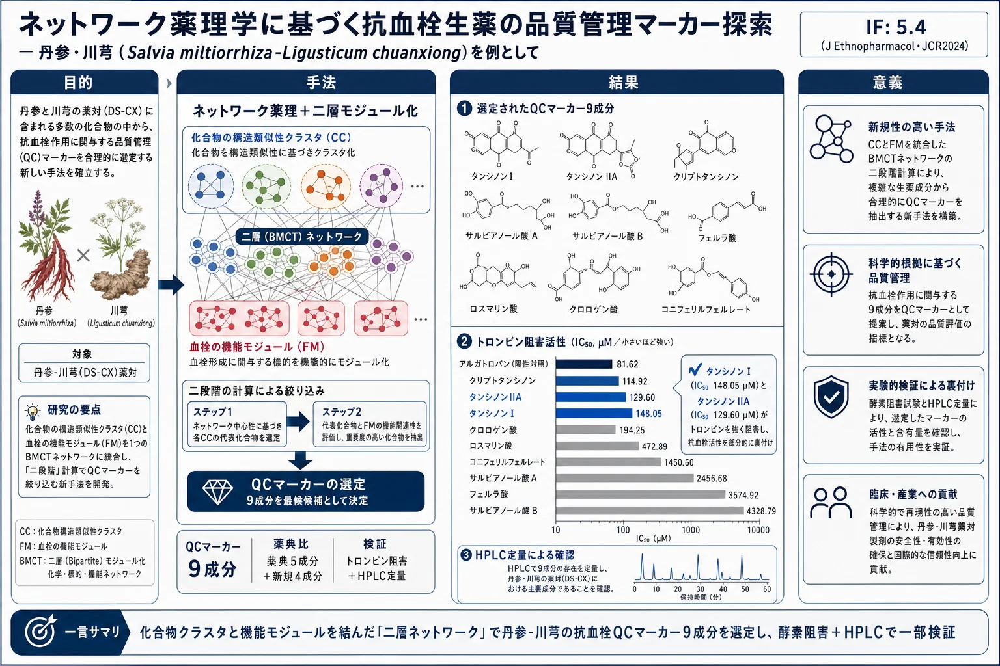
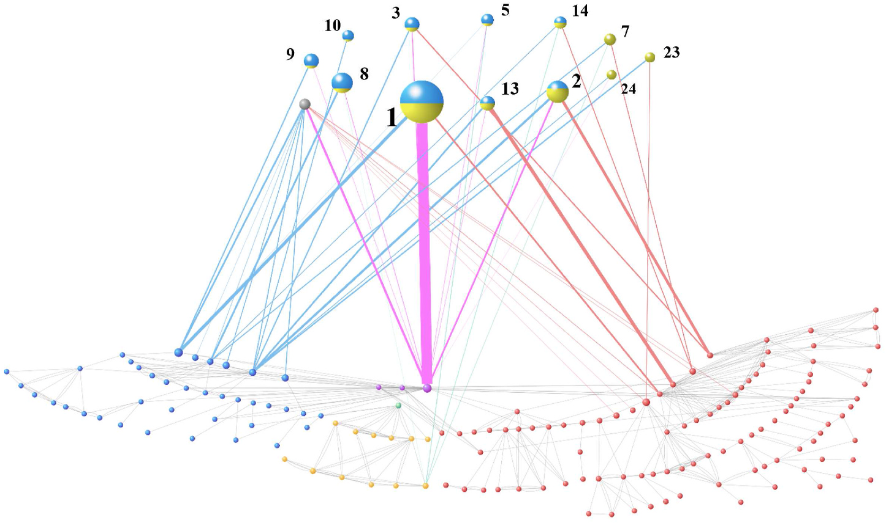
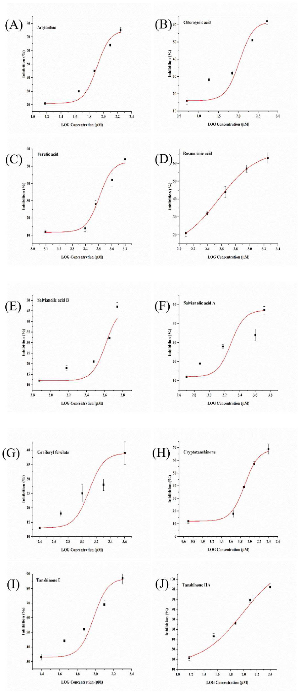

ネットワーク薬理学に基づく抗血栓生薬の品質管理マーカー探索 — 丹参・川芎（Salvia miltiorrhiza-Ligusticum chuanxiong）を例として

<!-- 方針: ほぼ全訳＋必要に応じた補足。原文構成に沿って訳出。「> 補足:」は訳者注。HPLCバリデーション数値・Table S1〜S4・Fig.S1〜S2 は補足資料（本体PDFに含まれない）ため「原文参照」とした。 -->
書誌情報
- 原題: A network pharmacology-based study on the quality control markers of antithrombotic herbs: Using Salvia miltiorrhiza - Ligusticum chuanxiong as an example
- 著者: Dai-Yan Zhang, Ruo-Qian Peng（共同筆頭）, Xu Wang, Hua-Li Zuo, Li-Yang Lyu, Feng-Qing Yang（責任著者）, Yuan-Jia Hu（責任著者）（マカオ大学 中薬品質研究国家重点実験室、香港中文大学（深圳）、重慶大学 化学化工学院ほか）
- 掲載: Journal of Ethnopharmacology 292 (2022) 115197. https://doi.org/10.1016/j.jep.2022.115197
- インパクトファクター: 5.4（Journal of Ethnopharmacology, JCR 2024 / Clarivate, Q1。民族薬理学・生薬研究分野の代表誌）
- 受領 2022-01-16 / 改訂 2022-02-20 / 採録 2022-03-11 / オンライン公開 2022-03-21
- ライセンス: CC BY-NC-ND 4.0（オープンアクセス）
- 助成: マカオ大学 [MYRG2019-00011-ICMS]
補足: 丹参（Danshen, DS）は Salvia miltiorrhiza Bunge（シソ科タンジン）の乾燥した根および根茎、川芎（Chuanxiong, CX）は Ligusticum striatum DC（セリ科センキュウ）の乾燥根茎。いずれも「活血化瘀（血行を促し血の滞りを除く）」に用いられ、心血管疾患（CVD）と深く関わる。DS-CX は中国で最も高頻度に使われる薬対（herbal pair）の一つで、多くのベストセラー処方の基幹をなす。本論文は、この薬対の品質管理（QC）マーカーをネットワーク薬理学（コンピュータ上での化合物-標的-機能の関係解析）で選び出す新しい方法論の提案である。分析化学（HPLC）そのものよりも、「どの成分をQCマーカーに選ぶべきか」を論理的に決めるアプローチに主眼がある。
要旨
民族薬理学的意義: 丹参（Salvia miltiorrhiza Bunge の乾燥根・根茎, DS）と川芎（Ligusticum striatum DC の乾燥根茎, CX）は、活血化瘀に有効であり、これは心血管疾患（CVD）と密接に関連する。
研究目的: 活性に基づく化学マーカーの同定は極めて重要だが、伝統中薬（TCM）における「多成分・多標的・多効果」という複雑な機序が、この作業の大きな障害となっている。本研究では、DS と CX についてネットワーク薬理学的予測と実験的検証を組み合わせ、全体としての複雑系と単一成分の中間層である「モジュール／クラスタ」を明確化することで、抗血栓生薬の品質管理（QC）を発見する有効な手法を探索した。
材料と方法: 化合物の構造類似性解析と、既報の血栓ネットワークに基づき、まず化学クラスタ（CC）ネットワークと機能モジュール（FM）ネットワークという2つの層をモジュール化し、これらを1つの二層モジュール化化合物-標的（BMCT: bilayer modularized compound target）ネットワークに連結した。CC から潜在的QCマーカーとなる重要化合物を同定するため「二段階（two-step）」計算を適用した。選定したQCマーカー化合物のトロンビン（THR）に対する in vitro 阻害活性を評価し、その薬理活性を部分的に検証した。含量測定には HPLC を用いた。
結果: ネットワークベースの解析により、BMCTネットワークで重要度の高い9成分が DS-CX のQCマーカーとして同定された：タンシノンI、タンシノンIIA、クリプトタンシノン、サルビアノール酸B、フェルラ酸、サルビアノール酸A、ロスマリン酸、クロロゲン酸、コニフェリルフェルレート。酵素阻害試験は、タンシノンIとタンシノンIIAの活性を部分的に検証した。化学プロファイリングは、これら9つのマーカー成分が薬対中の主要成分であることを示した。
結論: 本研究は DS-CX 薬対の活性ベースのQCマーカーを同定し、他の生薬・薬対・処方のQCに利用可能な新しい方法論を提供した。
補足（略語）: BBB＝血液脳関門、CC＝化合物クラスタ、CVD＝心血管疾患、BMCTネットワーク＝二層モジュール化化合物-標的ネットワーク、CX＝川芎、DS＝丹参、FM＝機能モジュール、HIA＝ヒト腸管吸収、PBS＝リン酸緩衝生理食塩水、QC＝品質管理、TCM＝伝統中薬、THR＝トロンビン。
1. 序論
伝統中薬（TCM）の品質管理（QC）には、安全性と有効性を確保するための厳密で明確な規則が必要である。活性に基づく化学マーカーの同定は極めて重要だが、TCM 内の「多成分・多標的・多効果」という複雑な機序が大きな障害となっている。具体的には、QCマーカーの発見・同定は主に系統的な化学分離に依存し、その後に多数の薬理活性アッセイと生物検定に導かれた化学分離を要する。しかし、成分の多様性、分離・スクリーニング過程の困難さ、機序の複雑さゆえに、有効成分の同定は常に TCM 研究のボトルネックであった。TCM の複雑な性質と、煩雑な実験の負担は、QC指標を見出す新しい手法の登場を求めている。
このQCマーカーのジレンマに直面したとき、全体としての複雑系と単一成分との中間層「モジュール／クラスタ」を明確化することが問題解決の助けになりうる。「モジュール／クラスタ」は全体の部分集合だが、類似した性質をもつ化合物や標的を統合する。TCM では、この「モジュール／クラスタ」により全体論的性格を反映する概念がいくつか提唱されてきた（「軍団（army group）」効果、生物活性等価組合せ成分（bioactive equivalent combinatorial components）、罐（Canister）理論など）。TCM のQCに対応させると、疾患モジュールに寄与する化合物クラスタを同定することは、活性ベースの化合物探索を大いに助け、QCマーカーの範囲を狭める。ただし「モジュール／クラスタ」概念を含む複雑な TCM 生物データは、データ解析・統合の難題である。ネットワーク薬理学はこの状況に対処する有効なツールであり、特有の可視化解析能力と多次元データ統合能力を通じて、中薬のQCマーカーを探索する新しいアプローチを提供する。
最小の構成単位として、薬対（pair）は処方の薬効を反映しつつ、構成が単純なため研究しやすい。本研究では、抗血栓効果と広い普及度をもちながら既存のQCマーカーに改善の余地がある薬対として、丹参（DS）と川芎（CX）を例に上記手法を探索した。DS と CX は活血化瘀により心血管疾患（CVD）関連の障害の治療に広く用いられる。中国中薬協会が2019年に発表した TCM の大型製品に関する公式報告に基づくと、両者はベストセラー生薬処方において最も高頻度に使われる薬対を構成する。DS と CX は米国・日本・オーストラリア・韓国・オランダなどでも広く用いられている。
しかし、既存のQCマーカーはそれらの複雑な性質を完全には反映していない可能性がある。中国薬典（2020年版）では、DS のQC基準は「タンシノンIIA・クリプトタンシノン・タンシノンIの総含量（HPLC）が0.25%以上、かつサルビアノール酸Bが3.0%以上」、CX のQC基準は「フェルラ酸が0.10%以上」である。一方、DS-CX は多くの生薬処方に用いられており、薬典では、精制冠心口服液／顆粒・脈脉丸／片／膠嚢・保心片ではサルビアノール酸BがQCマーカー、精制冠心片／軟膠嚢ではサルビアノール酸BとタンシノンIIA、心寧片ではダンシェンス（Danshensu）が用いられている。生薬とその関連製品のQCマーカーとして使われているのは、ごく少数の化合物にすぎない。QCマーカーの不備、CVDにおける顕著な有効性、臨床での広範な応用は、ネットワーク薬理学に基づく手法をQCマーカーに応用する良い研究対象たらしめている。
こうした背景のもと、本研究はネットワーク薬理学的手法と実験を組み合わせて DS-CX 薬対の潜在的QCマーカーを探索することを目的とする。化合物の構造類似性解析と既報の血栓ネットワーク（Kong ら, 2015）に基づき、まず化学クラスタ（CC）ネットワークと血栓の機能モジュール（FM）ネットワークの2層をモジュール化し、1つの二層モジュール化化合物-標的（BMCT）ネットワークに連結した。化合物と標的の相互作用、モジュール／クラスタ分割を組み合わせ、異なるCCとFMの累積スコアを計算して、どのCCが特定の機能を担うかを比較した。有意なスコアをもつCCに絞り込み、さらに特定の化合物を同定した。選定したQCマーカーのトロンビン（THR）に対する in vitro 阻害活性を評価し、薬理活性を部分的に検証した。研究の枠組みを Fig. 1 に示す。

2. 材料と方法
2.1. データマイニングと処理
2.1.1. 化合物の収集と処理
DS と CX の化合物情報は、文献と3つの化学データベースから収集した：TCMSP（中薬系統薬理学データベース, http://tcmspw.com/tcmsp.php）、TCMID（中薬統合データベース, http://www.megabionet.org/tcmid/）、中国科学院上海有機化学研究所 化学データベース（http://www.organchem.csdb.cn）。トレオニンやフルクトースのような一般的なアミノ酸・単糖は本研究から除外した。PubChem（http://pubchem.ncbi.nlm.nih.gov）を用いて化合物を標準化し、PubChem CID や標準SMILES などの化学データを補完した。さらに、一次スクリーニング用に ヒト腸管吸収（HIA）と血液脳関門（BBB）透過性を admetSAR（http://lmmd.ecust.edu.cn/admetsar2）から収集した。HIA または BBB が陰性の化合物は除外した。ただし文献との照合により、顕著な薬理活性をもつ一部の化合物が除外されていることが判明したため、予測プラットフォームの偽陰性の可能性を考慮し、これらの化合物を研究に再度含めた。
2.1.2. 標的の収集と処理
DS-CX 薬対の標的は3つの情報源から取得した：TCMSP、PubChem、および類似性アンサンブル解析（SEA, http://sea.bkslab.org/）。TCMSP からは「related targets（関連標的）」の情報を収集した。PubChem からは「bioassay results（バイオアッセイ結果）」で「active（活性）」とラベル付けされた情報を保持した。同時に、実験的研究の限界を補うため、SEA による仮想予測で追加データを提供した。SEA からの標的のうち、偽発見率（FDR）<0.05 かつ maxTc≥0.57 を満たすものを本データセットに保持した。標的の遺伝子名の標準化には UniProt（https://www.uniprot.org/）を用いた。
2.2. ネットワークの構築
2.2.1. CC（化学クラスタ）ネットワークの構築
本研究では、化合物は構造類似性に基づいて CC ネットワークを形成した。R studio 上で動作する ChemmineR ツールキットを用い、化合物間でアトムペア・フィンガープリントに基づく類似性検索（Tanimoto係数≥0.6）を実施した。化合物類似性クロスマトリクスを得たのち、化合物の構造類似性ネットワークを構築し、Cytoscape 3.8.0 で可視化した。さらにトポロジカルパラメータを抽出した。異なる母骨格をもつモジュール化ネットワークを得るため、MCODE 1.6.1 プラグインを用いてネットワークを異なるクラスタに分割した。分類結果は手作業で確認し、各クラスタが同じ母構造をもつことを保証した。
2.2.2. FM（機能モジュール）ネットワークの構築
抗血栓効果に標的を絞るため、本研究は Kong ら（2015）の血栓ネットワークを参照し、これを FM ネットワークとした。この既報では、血栓ネットワークの標的情報は Reactome データベースと文献に由来し、経路・反応情報を3つの異なる FM に分けている：凝固カスケード（FM1）、フィブリン血栓の溶解（FM2）、血小板の活性化・シグナル伝達・凝集（FM3）。このネットワークでは、ノードは血栓形成過程に関与するタンパク質またはタンパク質複合体を意味する。一部のタンパク質複合体は複数の遺伝子にコードされうる。化合物の標的と対応させるため、血栓ネットワークのタンパク質／タンパク質複合体を単一標的に分割して比較した。
2.2.3. BMCT ネットワークの構築
BMCT ネットワークは、生薬化合物の CC ネットワークと、血栓に関連する FM ネットワークから構成される二層ネットワークである。化合物とその標的、および血栓ネットワークのタンパク質の相互作用を組み合わせることで、2つのモジュール化ネットワークを連結し、BMCT ネットワークを形成した。
2.3. ネットワーク解析
文献と我々の先行研究から、生薬・生物ネットワークは通常、スモールワールド特性をもつ非ランダムなスケールフリーネットワークである。すなわち、化学ネットワークの化合物を一律に扱うべきではなく、生物ネットワークの生体分子も同様である。そこで、標準化したネットワークパラメータに基づいて化合物と標的の重みを設定した。化学層では、クラスタ化したノードの次数中心性・媒介中心性・近接中心性をまず標準化した。式(1)は、ネットワークパラメータを表す x の標準化値 x* を示す。次に、3つの標準化データの平均を w(ci) と定義した。個々のノードは重み「1」のクラスタとみなした。血栓ネットワークのノードは単一タンパク質またはタンパク質複合体を表し、その重みは w(ci) と同じ方法で計算し w(bj) とした。
$$ x^* = \frac{\log_{10}(x+1)}{\log_{10}(x_{max}+1)} \quad (1) $$
重みの計算後、化合物-標的間、および CC-FM 間の連結強度を明らかにするアルゴリズムを提示した。2種類のマトリクスで表現する。第一に、化合物と標的の重み付き関係を示す（Fig. 2 参照）。ここで aij ∈ {0, 1}、aij = 1 は化合物 ci が標的 bj に関連することを表し、0 は連結なしを意味する。式(2)は、化合物 ci と標的 bj の連結強度 dij の計算法を示す。式(2)では、w(ci) と w(bj) を式(1)でさらに標準化して次元の影響を除いている。
$$ d_{ij} = w(c_i) \cdot a_{ij} + w(b_j) \cdot a_{ij} \quad (2) $$
ここで w(ci) は化学ネットワークにおける化合物 ci の重み、w(bj) は生物ネットワークにおける標的 bj の重みである。
さらに、TCM の本質的品質と全体論的性質を反映するため、TCM の化学的・生物学的クラスタリング特性を考慮した。グラフ表現の観点では、構造類似性をもつ化合物、および類似機能をもつ生体分子をそれぞれ統合することで、化学ネットワークと生物ネットワークをモジュール／クラスタベースのネットワークに縮約できる。マトリクス表現の観点では、同質な行・列を統合できる。マトリクス Am×n はマトリクス Ep×q に変換された（Fig. 3）。式(3)がその計算式である。
$$ e_{uv} = \sum d_{ij} = \sum_{c_i \in m_u,\, b_j \in m^*_v} w(c_i) \cdot a_{ij} + w(b_j) \cdot a_{ij} \quad (3) $$
ここで euv は mu と m*v の関連を測る指標で、dij の総和に等しい。
化学モジュールと生物モジュールの関係をマトリクス Ep×q で表し、マーカー同定には「二段階（two-step）」の解法を用いた（式(4)）。argmax は関連関数の定義域のうち関数値が最大となる点を表す。第一段階では、集合 {P(mv), v = 1, …, q} について、mv を最も強く連結（euv が最大）して制御する CC の組合せを同定した。有意なCCをスクリーニングしたのち、第二段階で潜在的QCマーカーを求めた。Q(mv) を mv を担う潜在的QCマーカーとし、Q(mv) は本研究の制約条件を満たす複数の ci である。集合 {Q(mv), v = 1, …, q} は、異なる関連生体分子をそれぞれ制御するQCマーカーの組合せである。最終的に、w(ci) が最大となる潜在的QCマーカーを得た。血栓の複雑さと生物ネットワークのスモールワールド特性を踏まえると、この生体分子モジュールベースの戦略はQCマーカー同定に合理的である。
補足: 式(4)（argmax を用いた二段階解法の定式化）は原文本文中に言及されるが、式そのものの完全な表記は本体PDFで明示されていない（詳細は原文参照）。要点は「①機能モジュールを最も強く動かす化学クラスタを選ぶ → ②その中から最重要の個々の化合物をマーカーに絞る」という二段階のスクリーニングである。
2.4. 試薬・材料
標準品のクロロゲン酸・フェルラ酸・ロスマリン酸・サルビアノール酸B・サルビアノール酸A・コニフェリルフェルレート・クリプトタンシノン・タンシノンI・タンシノンIIA（いずれも純度≥98%、HPLC測定）は Purechem-standard 社（成都）より購入。トロンビン（THR）は Sigma-Aldrich（米国セントルイス）、基質 S-2238（≥99%、HPLC）は Adhoc International Technology 社（北京）、アルガトロバンは Huazhong Haiwei Gene Technology 社（北京）より入手。HPLC グレードのアセトニトリルとメタノールはそれぞれ上海泰坦科技・北京百霊威科技より購入。エタノールは成都科隆化工より入手。全実験の水は純水装置（ATSelem 1820A, 重慶安特生環保設備）で精製した。
DS と CX の生薬は康美薬業（Kangmei Pharmaceutical）より2020年5月に購入。産地はそれぞれ山東省と四川省。証拠標本（丹参 番号 SM2020050101、川芎 番号 CF2020050101）は重慶大学 化学化工学院 薬物工程実験室に保管した。
2.5. 試料溶液の調製
標準品を精密に秤量してメタノールに溶解し、濃度 1600.0 µg/mL（サルビアノール酸B）、600.0 µg/mL（タンシノンIIA）、400.0 µg/mL（コニフェリルフェルレート・クロロゲン酸・フェルラ酸・ロスマリン酸・サルビアノール酸A・クリプトタンシノン・タンシノンI）の標準溶液を調製し、使用前に4 ℃で保存した。
DS と CX の生薬は粉砕して粉末にし、50メッシュふるい（約0.29 mm）でろ過後に乾燥箱で保存した。11通りの配合比の DC 薬対（1:0, 1:1, 2:1, 3:1, 2:3, 3:4, 4:3, 3:2, 1:3, 1:2, 0:1）を超音波補助抽出でそれぞれ調製した。まず DS と CX の混合粉末 2.0 g を 70% エタノール 20 mL とともに 250 mL 丸底フラスコに分散させた。次に約25 ℃の超音波洗浄機で30分間抽出した。この操作をもう1回繰り返した。抽出液をろ過・合一し、遠心分離（4 ℃, 2504×g）を10分間行った。上清を回収し、分析前に 0.22 µm メンブレンフィルター（上海泰坦科技）でさらにろ過した。
2.6. HPLC 分析
HPLC 分析は Agilent 1260 シリーズ液体クロマトグラフシステム（Agilent Technologies, 米国カリフォルニア州パロアルト）で行い、ダイオードアレイ検出器（DAD）を備え、Agilent ChemStation ソフトウェアで制御した。クロマト分離は Agilent ZORBAX SB-Aq カラム（250 mm × 4.6 mm, 5 µm）にガードカラム（12.5 mm × 4.6 mm, 5 µm）を接続し、カラム温度35 ℃で実施。移動相は 0.1% 酢酸水溶液（A）とアセトニトリル（B）、流速 1 mL/min。グラジエントプログラムは次の通り：
| 時間（min） | アセトニトリル（B）比 |
|---|---|
| 0–2 | 5% |
| 2–10 | 5 → 15% |
| 10–24 | 15 → 22% |
| 24–35 | 22 → 29% |
| 35–42 | 29 → 37% |
| 42–60 | 37 → 60% |
| 60–62 | 60 → 5% |
| 62–70 | 5% |
全試料の注入量は 10 µLとした。
補足: HPLC 法のバリデーション（検量線・直線範囲・LOD/LOQ・精度・回収率など）は本論文の補足資料（Supplementary material）に記載されており、本体PDFには含まれない。したがって定量バリデーションの具体的数値は「原文（補足資料）参照」とする。本文で確認できるのは上記のカラム・移動相・グラジエント・流速・カラム温度・注入量の条件のみ。
2.7. THR（トロンビン）阻害活性アッセイ
PBS（リン酸緩衝生理食塩水）緩衝液は、Na2HPO4 1.44 g と KH2PO4 0.24 g を水 800 mL に溶解して即時調製した（1.0 M NaOH で pH を8.0に調整）。THR のストック溶液（125 U/mL）は THR 4.16 mg を PBS 1.0 mL に溶解して調製。S-2238（2.0 mg/mL）、アルガトロバン（0.8 mM）、標準品（5.0 mM）のストック溶液をそれぞれ PBS 緩衝液で調製した。アルガトロバンと標準品の溶液は使用前に PBS で所定濃度に希釈した。THR 阻害活性アッセイは iMark™ マイクロプレート吸光度リーダー（Bio-Rad Laboratories, 米国）で実施した。アルガトロバンまたは標準品溶液 50 µL と THR 溶液 50 µL を混合し、37 ℃で10分間インキュベート。続いて発色基質として S-2238（2.0 mg/mL）100 µL を加えてマイクロプレートリーダー内で反応を開始。吸光度は 405 nm で30秒ごとに10分間モニターし、各群を3回測定した。対照群では標準品溶液を PBS 緩衝液に置き換えた。THR の阻害率（%）は式(5)で算出した：
$$ I(\%) = \frac{\left(\frac{dA}{dt}\right)_{blank} - \left(\frac{dA}{dt}\right)_{sample}}{\left(\frac{dA}{dt}\right)_{blank}} \quad (5) $$
ここで I(%) は阻害率、(dA/dt)blank と (dA/dt)sample はそれぞれ対照群・実験群の反応速度。結果は3回の実験の平均±標準偏差で表した。
3. 結果
3.1. CC ネットワーク
DS-CX の CC ネットワークは 227ノード・471エッジで構成された（Fig. 4）。構造活性相関の理論によれば、類似構造の化合物は類似した生物活性を示す傾向があり、異なるCCは異なる生物機能を生むことがある。MCODE に基づくモジュール処理と手作業による検証の結果、24個のCCが同定された（化合物情報は原文 Table S1 参照）。

3.2. FM ネットワーク
FM ネットワークでは、ノードは血栓に関連する単一タンパク質／タンパク質複合体を表す。DS-CX の抗血栓標的を同定するため、血栓ネットワークの 149個のタンパク質・タンパク質複合体を137標的に分割した（原文 Table S2）。例えばプロトロンビナーゼは F5 と F10 に、プロトロンビンは F2 に対応させた。さらに、血栓ネットワークは3つの独立した FM と2つの交差する FM に分割された。
137個の抗血栓標的と DS-CX の405標的を重ね合わせると、DS-CX の 18標的が見出された：AKT1, F2, F3, F7, F10, FYN, GNAI1, ITGA2B, ITGB3, LCK, MAPK1, MAPK11, MAPK14, MAPK3, PIK3CG, PLAU, PTPN1, SRC。これら18標的は27個のタンパク質／タンパク質複合体に分布していた。
3.3. BMCT ネットワーク
BMCT ネットワークは、構造類似性でクラスタ化した化学ネットワークと、機能に基づく生物ネットワークから構成された。CC ネットワークは 450エッジ・155ノードで構成された。第一段階計算（最良のCCを選ぶ）の結果を明確に可視化するため、全化合物を10個の未クラスタ化合物と、生物層を直接制御する12個のCC（CC1, CC2, CC3, CC5, CC7, CC8, CC9, CC10, CC13, CC14, CC23, CC24）に分けた。
標的層は 149タンパク質・414関係で構成され、色分けした 5つの FM に分割された。27個のタンパク質／タンパク質複合体が DS-CX 薬対に直接影響を受け、うち FM1 に8個、FM2 に2個、FM3 に16個、FM1&3 に1個。化合物-標的の連結では 176連結が同定され、うち83が FM1、8が FM2、53が FM3、32が FM1&3 に属した。
BMCT ネットワークの全体像は原文 Fig. S1 に示す。ネットワークが化合物・標的・それぞれのモジュール属性など多数の要素を含み、全体が非常に煩雑で「モジュール／クラスタ」特性の表現に不利であったため、クラスタ特性に基づいて化合物層ネットワークを統合した。Fig. 5 に示すように、化学層ではノードが化合物クラスタを示し、DS-CX の異なる化合物クラスタが担う主要な生物機能を簡潔かつ明確に示せるようにした。

3.4. ネットワーク解析
方法論の「二段階」解法に従い、まず抗血栓標的を直接制御する 12の化学モジュールと血栓ネットワークの FM との連結強度を計算した（Table 1）。FM1&2 は DS-CX に制御されないため、その連結強度は示していない。Table 1 に示すとおり、CC1・CC2・CC13が生物 FM の制御において他より高い連結強度を示した。
Table 1. CC と FM の連結強度。（SUM は4つの FM に対する CC の連結強度合計。「–」は連結なし）
| CC | FM1 | FM2 | FM3 | FM1&3 | SUM |
|---|---|---|---|---|---|
| CC1 | 14.96 | – | 7.60 | 21.61 | 44.17 |
| CC2 | 10.39 | – | 13.22 | 7.22 | 30.83 |
| CC3 | 5.13 | – | 5.43 | 2.50 | 13.06 |
| CC5 | 1.13 | 2.25 | – | 1.61 | 4.99 |
| CC7 | 4.06 | 1.86 | 3.07 | – | 8.99 |
| CC8 | 8.10 | 1.14 | – | 1.91 | 11.15 |
| CC9 | 5.05 | – | – | 1.44 | 6.49 |
| CC10 | 3.51 | – | – | – | 3.51 |
| CC13 | 7.46 | – | 16.59 | 1.58 | 25.63 |
| CC14 | 2.46 | 2.10 | 3.35 | – | 7.91 |
| CC23 | 5.68 | – | 2.23 | – | 7.91 |
| CC24 | 2.52 | – | 0.61 | 0.95 | 4.08 |
「二段階」法の第二段階に従い、連結強度の高いCCを選んだ。第一のCCの化合物が尽きたら、第二のCCの化合物が補完として働く。以下同様に処理する。候補化合物が特定の生薬に偏る状況を避けるため、候補化合物は DS と CX で別々にスクリーニングした。計算により化合物と標的の連結強度を求め、同じ FM 内の標的の連結を組み合わせて、異なる生物モジュールを反映する 88連結を確定した（原文 Table S3）。さらに重要な化合物を同定するため、この88連結に基づいて 33個の DS 化合物と20個の CX 化合物の総連結強度を求め、化合物を統合してランク付けした（原文 Table S4）。
既報の定量結果を考慮し、DS-CX の8つの潜在的化学マーカーを選定した。詳細は Table 2 に示す。加えて、中国薬典で DS のQCの主要成分・化学マーカーの一つであるサルビアノール酸Bも実験的検証のために含めた。
Table 2. DS-CX の潜在的QCマーカー。（Score は連結強度に基づくスコア。「–」は該当なし）
| モジュール | 生薬 | 化合物 | 化合物クラスタ | 生体分子 | 遺伝子名 | Score |
|---|---|---|---|---|---|---|
| FM1 | DS | タンシノンIIA | CC1 | プロトロンビン | F2 | 1.19 |
| FM1 | DS | タンシノンI | CC2 | プロトロンビン | F2 | 1.00 |
| FM1 | CX | コニフェリルフェルレート | 未クラスタ化合物 | TF, sequestered TF | F3 | 3.31 |
| FM1 | CX | フェルラ酸 | CC14 | TF, sequestered TF | F3 | 2.46 |
| FM2 | DS | – | – | – | – | – |
| FM2 | CX | – | – | – | – | – |
| FM3 | DS | ロスマリン酸 | CC13 | p-Y419-Src, Src, Fyn, p-Y530-Src, focal complex, G-protein Gi, LCK, GNAI | SRC, FYN, ITGA2B, ITGB3, GNAI1, LCK | 8.75 |
| FM3 | DS | サルビアノール酸A | CC13 | p-Y419-Src, Src, Fyn, p-Y530-Src, focal complex, G-protein Gi, LCK, GNAI | SRC, FYN, ITGA2B, ITGB3, GNAI1, LCK | 7.84 |
| FM3 | DS | タンシノンIIA | CC1 | integrin alpha IIb beta3, focal complex, integrin alpha IIb p(T779)-beta3 | ITGA2B, ITGB3, SRC | 3.97 |
| FM3 | DS | クリプトタンシノン | CC1 | PTPN1 | PTPN1 | 1.16 |
| FM3 | DS | タンシノンI | CC2 | PI3K gamma | PIK3CG | 1.14 |
| FM3 | CX | クロロゲン酸 | 未クラスタ化合物 | PTPN1 | PTPN1 | 1.56 |
| FM3 | CX | フェルラ酸 | CC14 | PTPN1 | PTPN1 | 1.13 |
| FM1&3 | DS | タンシノンIIA | CC1 | トロンビン | F2 | 1.66 |
| FM1&3 | DS | タンシノンI | CC2 | トロンビン | F2 | 1.47 |
| FM1&3 | CX | – | – | – | – | – |
3.5. 選定化合物の THR 阻害活性
上記9成分の in vitro THR 阻害活性を評価した。既知の THR 阻害薬であるアルガトロバンを陽性対照薬とした。結果を Fig. 6 に示す。アルガトロバンは IC50 = 81.62 µM で強い阻害効果を示した。クロロゲン酸（IC50 194.25 µM）、クリプトタンシノン（IC50 114.92 µM）、タンシノンI（IC50 148.05 µM）、タンシノンIIA（IC50 129.60 µM）は THR に対し非常に良好な阻害活性を示した。一方、フェルラ酸（IC50 3574.92 µM）、ロスマリン酸（IC50 472.89 µM）、サルビアノール酸B（IC50 4328.79 µM）、サルビアノール酸A（IC50 2456.68 µM）、コニフェリルフェルレート（IC50 1450.60 µM）は THR に対し明らかな阻害活性を示さなかった。Table 2 に示すように、タンシノンIとタンシノンIIA はトロンビン・プロトロンビンを標的とする。したがって、これらの結果は、選定したQCマーカーが DS-CX 中の生物活性化合物であることを部分的に示した。

3.6. HPLC による薬対中のマーカー成分の含量測定
HPLC 法のバリデーションは補足資料を参照（原文参照）。開発した HPLC 法に基づき、超音波抽出法で得た DS-CX 薬対抽出物中の9つのマーカー成分の含量を測定した。結果を Table 3 に示す。標準品混合物・DS:CX = 1:1・DS・CX（D）の HPLC クロマトグラムを Fig. 7 と原文 Fig. S2 に示す。結果は、9つのマーカー成分が薬対中の主要成分であること、およびサルビアノール酸Aを除き、DS または CX 生薬中の含量が異なる配合比でも同程度であることを示した。サルビアノール酸Aの変動は、その構造中のエステル結合が分解しやすいことによると考えられる。

Table 3. 異なる配合比の生薬（超音波抽出）中の9化学成分の含量変化（mg/g、平均±SD、n=3）。 （クロロゲン酸・フェルラ酸・コニフェリルフェルレートの含量は CX 生薬量を基準に、ロスマリン酸・サルビアノール酸B・サルビアノール酸A・クリプトタンシノン・タンシノンI・タンシノンIIA の含量は DS 生薬量を基準に算出。「–」は検出不能）
| 試料（DC比） | クロロゲン酸 | フェルラ酸 | ロスマリン酸 | サルビアノール酸B | サルビアノール酸A | コニフェリルフェルレート | クリプトタンシノン | タンシノンI | タンシノンIIA |
|---|---|---|---|---|---|---|---|---|---|
| 1:0 | – | – | 1.55 ± 0.05 | 7.15 ± 0.12 | 0.49 ± 0.03 | – | 0.62 ± 0.02 | 0.94 ± 0.03 | 0.51 ± 0.04 |
| 3:1 | 0.62 ± 0.02 | 1.46 ± 0.00 | 1.94 ± 0.01 | 9.64 ± 0.02 | 0.54 ± 0.01 | 2.24 ± 0.04 | 0.71 ± 0.00 | 1.16 ± 0.00 | 0.70 ± 0.00 |
| 2:1 | 0.49 ± 0.01 | 1.44 ± 0.03 | 2.10 ± 0.00 | 10.41 ± 0.03 | 0.55 ± 0.03 | 1.84 ± 0.03 | 0.86 ± 0.01 | 1.30 ± 0.01 | 0.80 ± 0.01 |
| 3:2 | 0.58 ± 0.00 | 1.56 ± 0.02 | 2.15 ± 0.00 | 11.16 ± 0.01 | 0.55 ± 0.00 | 1.80 ± 0.02 | 0.75 ± 0.00 | 1.25 ± 0.00 | 0.79 ± 0.02 |
| 4:3 | 0.54 ± 0.01 | 1.50 ± 0.01 | 2.07 ± 0.01 | 10.46 ± 0.09 | 0.43 ± 0.03 | 1.80 ± 0.01 | 0.74 ± 0.04 | 1.24 ± 0.00 | 0.75 ± 0.00 |
| 1:1 | 0.50 ± 0.00 | 1.39 ± 0.02 | 2.07 ± 0.01 | 8.26 ± 0.02 | 0.17 ± 0.01 | 2.18 ± 0.02 | 0.67 ± 0.06 | 1.12 ± 0.01 | 0.61 ± 0.04 |
| 3:4 | 0.55 ± 0.04 | 1.55 ± 0.01 | 2.07 ± 0.01 | 9.76 ± 0.01 | 0.12 ± 0.01 | 1.77 ± 0.03 | 0.77 ± 0.00 | 1.33 ± 0.00 | 0.79 ± 0.00 |
| 2:3 | 0.54 ± 0.00 | 1.51 ± 0.02 | 2.00 ± 0.01 | 9.75 ± 0.00 | 0.13 ± 0.02 | 1.64 ± 0.04 | 0.73 ± 0.02 | 1.24 ± 0.03 | 0.72 ± 0.01 |
| 1:2 | 0.56 ± 0.01 | 1.52 ± 0.09 | 1.78 ± 0.05 | 9.08 ± 0.02 | 0.19 ± 0.00 | 1.66 ± 0.07 | 0.60 ± 0.00 | 1.38 ± 0.02 | 0.50 ± 0.00 |
| 1:3 | 0.56 ± 0.00 | 1.44 ± 0.06 | 2.06 ± 0.02 | 9.37 ± 0.01 | 0.25 ± 0.00 | 1.65 ± 0.02 | 0.71 ± 0.03 | 1.38 ± 0.00 | 0.75 ± 0.01 |
| 0:1 | 0.43 ± 0.02 | 1.32 ± 0.07 | – | – | – | 1.73 ± 0.04 | – | – | – |
補足: 配合比の表記「DC 1:0」等は DS:CX 比を意味する（1:0＝DS単独、0:1＝CX単独）。DS 単独（1:0）ではクロロゲン酸・フェルラ酸・コニフェリルフェルレート（CX由来成分）が検出されず、CX 単独（0:1）では丹参のフェノール酸・タンシノン類（DS由来成分）が検出されないという、由来生薬と成分の対応が読み取れる。サルビアノール酸A（DS由来）は 1:1〜2:3 で 0.12〜0.19 と低く、他の比（0.43〜0.55）より明確に低下しており、本文の「エステル結合による分解しやすさ」の記述と整合する。
4. 考察
TCM は複雑であり「多成分・多標的・多効果」で作用するため、安全性・有効性の担保が難しく、臨床効果を保証しない。同時に、この特性は TCM の品質同定を困難にする。加えて、地域要因・加工工程・採取時期・抽出精製工程・保存条件など、様々な要因が TCM の品質に影響する。こうした状況に対し、Liu 教授により Q-marker（品質マーカー）の概念が提唱された。これは生薬・炮製品・エキス・製剤・中間製品といった長い生産チェーンの様々な TCM をカバーする。「物質-機能（substance-function）」を核として、Q-marker は有効性-物質基盤-品質管理マーカーを緊密に結びつけ、原料から各種製品までの全過程を貫く。本研究では、主に生産チェーンの最前段にある薬対のQCマーカーを同定した。
QCマーカーの探索には、クロマトグラフィー（GC）・HPLC・質量分析（MS）などの分析技術が一般的手法である。GC-MS・LC-MS・近赤外分光（NIRS）・NMR など各種のクロマト-MS が広く使われる。しかしこれらの技術には各々欠点がある。GC-MS は化合物ライブラリや標準品への依存度が高く、LC-MS は保持時間がシステム間で再現しにくく、NMR は感度が低く検出対象物質が限られる。伝統的分析技術は新しい手法を求めている。バイオインフォマティクス・ビッグデータ科学・計算生物学などの学際分野の発展に伴い、研究者は孤立したモードから系統的な研究モードへ目を向けている。ネットワーク薬理学の概念は Li 教授により提唱され、作用機序研究や処方・生薬・生薬活性成分の伝統的性質の研究、増効減毒の研究に広く用いられている。TCM の品質管理という大きな研究課題に対し、ネットワーク薬理学は全体論的視点から TCM の全情報を統合し、異なる部分の生物機能に基づいて潜在的QCマーカーを決定し、異なる下位活性の相乗性を説明する。DS-CX の研究では、2つの異質なネットワークを CC と FM にモジュール化し、化合物-標的間の相互作用でこれらを BMCT ネットワークに統合した。これにより単一化合物と標的の対応がクラスタとモジュールとして統合された。定量計算はさらにクラスタとモジュールの関係の強度を同定し、異なる FM を担う責任 CC を見出す助けとなり、「二段階」法による最終的なQCマーカーの選択を可能にした。モジュールベースの手法は、化合物群と疾患の連結（活性ベースの化合物と密接に関連）を明確に示すため、活性ベースの化合物の同定に非常に有用である。実験技術と組み合わせることで、本新手法は有望な可能性を示す。
生薬・処方と比較して、薬対は理想的な研究対象である。TCM の配伍理論によれば、生薬は単独では効果が限られても、特定の組合せで増強・相乗効果を示すことがある。処方は臨床応用の主要形態で、配伍理論に従う複数の中薬を含むが、多くは構成成分が多すぎて理解を妨げる。薬対は TCM の相乗効果を反映しつつ、複雑な処方を単純化し、特に処方中で主要な効果を担うため、機序の理解とQCマーカーの同定において生薬・処方より優れている。したがって薬対は良い研究対象であり、とりわけ活血化瘀（HXHY）処方でよく使われる薬対がふさわしいと考えられる。
TCM は多成分・多標的・多効果を特徴とする典型的な複雑系である。構造類似性でクラスタ化した化合物と、機能経路でクラスタ化した生体分子が、この系で鍵となる役割を果たす。生薬・処方に対しては「軍団（army group）」効果や「罐（canister）」効果が提唱されている。すなわち、単一の化合物／成分は低親和性の作用しかもたなくとも、類似構造をもつ多数の化合物／成分が協働して測定可能な薬理効果を生む。一方、このクラスタリングは TCM の多標的生体調節にも存在する。これは、複数標的を調節することでより有効な薬物／化合物の組合せが開発可能であること、疾患は単一遺伝子の異常でめったに起こらないことを示唆する。複雑な疾患（がん、免疫系疾患など）は、特定の生物ネットワーククラスタの摂動によって引き起こされうると一般に考えられている。
「二段階」解法も本研究のもう一つの焦点である。モジュール特性は TCM の本質的問題と、異なる生薬問題への転用可能性に関わる。「二段階」解法は QCマーカーの同定に特化して設計されており、TCM のQCマーカーに対する最適化アルゴリズムとも言える。QCマーカーの同定は、数百の生薬化合物から少数の化合物を最終マーカーとして選ぶことを要し、どうスクリーニングするかが関心事となる。本研究では、化学クラスタと機能モジュールが連結しているという前提のもとで化学クラスタの重要度をランク付けし、まず一部の化合物を除外した。次にこれらのクラスタの中から、より代表的な化合物をQCマーカーとしてさらに絞り込んだ。
抽象的概念をネットワークレベルで可視化・定量化することは、現行のネットワークベース手法の進展かもしれない。「軍団」「生物活性等価組合せ成分」「罐理論」のような理論は、TCM の複雑な物質基盤から複雑な生物効果を考えることで、TCM 開発のボトルネックに対処するために提唱された。このうち「罐理論」と「軍団」は、生薬に含まれる成分・代謝物は含量が低いが、その小さな生物効果が重ね合わさってより大きな効果を生むことを指す。「生物活性等価組合せ成分」は、複雑な混合物から抽出された、元の生薬の全効果を担う成分の組合せの正確な構成である。これらの理論はまず、主要な役割を果たす生薬の活性成分を同定するために提唱され、次に生薬の複雑な成分の重畳効果を説明する。本研究ではまず、データスクリーニングにより血栓に関連する化合物を同定し、次にBMCTネットワークを構築してモジュール化した化合物と血栓生体分子の関係を定量的に解析し、TCM の異なる種類の化合物とその重畳効果を明確に説明し、これらいくつかの理論のネットワークレベルでの定量的意義を明らかにした。
ネットワーク解析には、分析プラットフォームに関連する研究上の限界もある。化合物データの収集・スクリーニングにおいて、化合物の HIA・BBB パラメータは admetSAR に由来し、パラメータ値と閾値を「+」「−」記号で置き換えて直感的に結果を示していた。しかし、admetSAR は何らかの理由で一時的に停止しており、研究後段での元データの追跡可能性にある程度影響した。
最終的に、クロロゲン酸・フェルラ酸・ロスマリン酸・サルビアノール酸B・サルビアノール酸A・コニフェリルフェルレート・クリプトタンシノン・タンシノンI・タンシノンIIA の9成分が DS-CX のQCマーカーとして選ばれた。ネットワーク研究で9成分を得たのち、これらが一般的な活性化合物であること、しかし9成分すべてが一緒に現れたのは初めてであることが判明した。中国薬典が提供する5成分と比較して、ネットワーク研究は4成分を追加し、重要なことに、ネットワーク解析は「モジュール／クラスタ」概念と「二段階」解法を通じてこれら9成分が現れる根拠を提供した。さらに、タンシノンIとタンシノンIIA は in vitro 試験で良好な THR 阻害活性をもち、ネットワーク薬理学解析で選定したQCマーカーが生物活性化合物であることを部分的に検証した。加えて、得られた結果は過去の研究でも部分的に検証されている：単一凝固アッセイ法により、フェルラ酸は組織因子（TF）阻害活性で重要な役割を果たすと証明された（Lee ら, 2004）。ロスマリン酸は Src ファミリータンパク質チロシンキナーゼの SH2 ドメインに特異的阻害効果をもち（Won ら, 2003）、Fyn キナーゼ阻害薬として発見され（Jelic ら, 2007; Liu ら, 2021）、Lck にも影響し Lck 依存的にミトコンドリア経路を介してアポトーシスを誘導する（Hur ら, 2004）。サルビアノール酸A は Lck と Src の SH2 ドメインとそのホスホチロシン含有結合モチーフとの結合を阻害する（Sperl ら, 2009）。破骨細胞前駆細胞培養では、タンシノンIIA の添加により c-Src レベルが有意に低下した（Kim ら, 2004）。分子ドッキングシミュレーション研究に基づき、クリプトタンシノンは強力な PTPN1 阻害活性を示した（Kim ら, 2017）。
本研究は複数の生薬、さらには処方にも拡張できる。薬対と処方の違いは主に、処方は生薬が多く、それらの間の配伍理論に支配される点にある。したがって、本研究と対照的に、処方では配伍を考慮し、QCマーカーが主に君薬（sovereign drug）に由来しつつ他の生薬も考慮すべきである。他の生薬医薬品のQCマーカー研究にも転用できる。本研究では血栓関連疾患の治療に DS と CX を用いた新アプローチを提案した。このアプローチを他の生薬とその適応症の研究に転用する際は、十分な科学的データの裏付けを特に確保する必要がある。生薬化合物とその生物活性データが十分にあることを保証することが重要である。次に、適応症については、選ぶ疾患は機序が明確で、生物機能モジュールの生物学的基盤がより明確なものであるべきである。
5. 結論
本研究では、CC と FM を含む革新的な BMCT ネットワークを構築した。モジュール化概念と計算を適用することで、DS-CX が凝固カスケードと血小板の活性化・シグナル伝達・凝集効果によって抗血栓効果を発揮することを同定した。「二段階」アルゴリズムはまず重要な CC（CC1・CC2・CC13）を同定する助けとなり、さらに有意な化合物を潜在的QCマーカーとして同定した。in vitro THR 阻害活性試験は、潜在的QCマーカーが生物活性化合物であることを部分的に証明した。最終的に、中国薬典で DS の化学マーカーの一つに挙げられるサルビアノール酸Bを含む9成分が DS-CX のQCマーカーとして選ばれた。まとめると、ネットワーク構築・解析・新アルゴリズムの適用・実験手法によって、本研究は DS-CX 薬対のQCマーカー同定における二層モジュール化ネットワークモデルの実現可能性を確認した。これは新しい研究フローを提供し、品質管理の新手法を広げるものである。加えて、単一生薬・薬対・さらには処方を含む TCM の潜在的機序の解明にも役立つ可能性がある。
訳者補足
- 本論文の位置づけ: 分析法の開発・バリデーション（検量線・LOD/LOQ・回収率など）そのものが主題ではなく、「複雑な生薬（薬対）のQCマーカーを、化合物の構造類似性と疾患の機能経路の“二層ネットワーク”で論理的に選定する」という方法論の提案が主眼。HPLC のバリデーション詳細は補足資料にあり本体PDFには含まれないため、本稿では条件（カラム・移動相・グラジエント等）のみを訳出し、定量バリデーション数値は「原文（補足資料）参照」とした。
- 薬典との比較: 中国薬典（2020年版）が DS-CX 関連で挙げるマーカーは5成分（タンシノンIIA・クリプトタンシノン・タンシノンI・サルビアノール酸B・フェルラ酸）。本研究はこれにロスマリン酸・サルビアノール酸A・クロロゲン酸・コニフェリルフェルレートの4成分を追加した9成分を提案する。既存マーカーを否定するのではなく、活性・ネットワーク重要度の観点で補強する立場。
- 活性検証の限界（原文も明記）: 選定9成分のうちトロンビンを実際に強く阻害したのはタンシノンI・IIA・クリプトタンシノン・クロロゲン酸のみ（IC50 100〜200 µM 台）。サルビアノール酸類・フェルラ酸・ロスマリン酸・コニフェリルフェルレートはトロンビン直接阻害は弱い（IC50 が mM オーダー）。これは、抗血栓効果がトロンビン阻害だけでなく、血小板活性化（FM3, Src/Fyn/インテグリン系）などの複数経路に分散しているため（Table 2 参照）で、「単一酵素アッセイでの活性の有無」だけでマーカーの妥当性を判断できないことを示す。ネットワーク上の重要度と実験的活性が必ずしも一致しない点は、この手法を実務に用いる際の注意点。
- 実務的示唆（訳者の整理・原文の主張ではない）: 多成分処方・薬対のQC規格を新設・改訂する際、「経験的に選ばれた少数マーカー」に加えて、成分の化学的クラスタと薬効経路のモジュール構造から候補を体系的に洗い出す本手法は、マーカー選定の根拠を補強する一手段になりうる。ただし、ネットワークの入力データ（化合物・標的DB、admetSAR 等）の品質・網羅性・可用性（本論文でも admetSAR の一時停止が限界として挙げられている）に結果が依存する点、および最終的には実測（HPLC 定量・活性試験）による裏付けが不可欠である点に留意が必要。